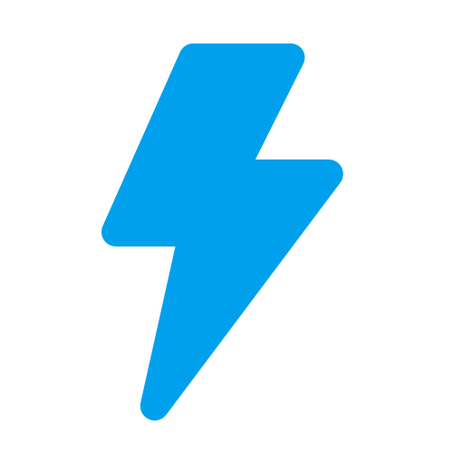
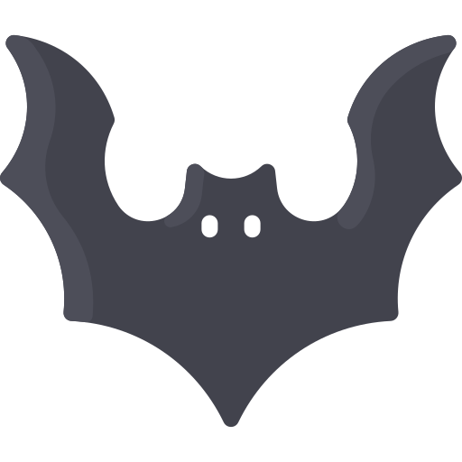
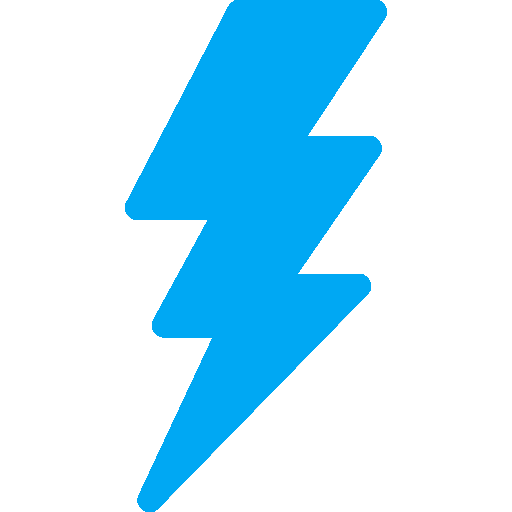
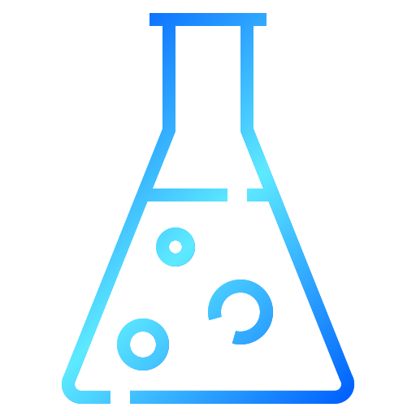

Light-Scan
Complete Network Toolkit v1.1.8
Light-Scan
Complete Network Toolkit v1.1.8
Security Speed Extensible Modular Windows • Linux • macOS • BSD • Solaris
Overview
Light-Scan is not just a port scanner — it is a complete Network Toolkit and Mini-Framework designed for security professionals, network administrators, and penetration testers. Built with Python and Scapy, it combines speed, accuracy, and enterprise-grade features in a single cohesive tool.
Unlike traditional scanners that sacrifice one for the other, Light-Scan delivers fast results without compromising depth. At its core is a powerful, multi-threaded port scanner, but it extends far beyond: a scripting engine (LSSE) with 13 built-in scripts, a packet sniffer, a result exporter, a GUI interface, and a packet crafting laboratory — all working together as a cohesive framework.
Installation & Setup
Light-Scan supports all major operating systems. Choose your platform below for setup instructions.
Prerequisites
Before installing Light-Scan, you need to install libpcap (Linux/macOS/BSD) or Npcap (Windows). This is required for packet capture and manipulation.
Windows
- Install Npcap (required)
- Clone & setup:
git clone https://github.com/adamboulaaz92-jpg/Light-Scan.git cd Light-Scan python -m venv venv .\venv\Scripts\activate pip install -r requirements.txt
Linux (Debian / Ubuntu)
sudo apt install libpcap-dev python3-venv git clone https://github.com/adamboulaaz92-jpg/Light-Scan.git cd Light-Scan python3 -m venv venv source venv/bin/activate pip install -r requirements.txt
Linux (Arch)
sudo pacman -S libpcap git clone https://github.com/adamboulaaz92-jpg/Light-Scan.git cd Light-Scan python -m venv venv source venv/bin/activate pip install -r requirements.txt
Linux (RHEL / CentOS / Fedora)
sudo yum install libpcap-devel python3-venv # or: sudo dnf install libpcap-devel python3-venv git clone https://github.com/adamboulaaz92-jpg/Light-Scan.git cd Light-Scan python3 -m venv venv source venv/bin/activate pip install -r requirements.txt
Linux (SUSE)
sudo zypper install libpcap-devel python3-venv git clone https://github.com/adamboulaaz92-jpg/Light-Scan.git cd Light-Scan python3 -m venv venv source venv/bin/activate pip install -r requirements.txt
Linux (Alpine)
sudo apk add libpcap-dev python3 py3-pip git clone https://github.com/adamboulaaz92-jpg/Light-Scan.git cd Light-Scan python3 -m venv venv source venv/bin/activate pip install -r requirements.txt
macOS (Homebrew)
brew install libpcap git clone https://github.com/adamboulaaz92-jpg/Light-Scan.git cd Light-Scan python3 -m venv venv source venv/bin/activate pip install -r requirements.txt
macOS (MacPorts)
sudo port install libpcap git clone https://github.com/adamboulaaz92-jpg/Light-Scan.git cd Light-Scan python3 -m venv venv source venv/bin/activate pip install -r requirements.txt
FreeBSD
sudo pkg install libpcap python3 git clone https://github.com/adamboulaaz92-jpg/Light-Scan.git cd Light-Scan python3 -m venv venv source venv/bin/activate pip install -r requirements.txt
OpenBSD
sudo pkg_add libpcap python3 git clone https://github.com/adamboulaaz92-jpg/Light-Scan.git cd Light-Scan python3 -m venv venv source venv/bin/activate pip install -r requirements.txt
NetBSD
sudo pkgin install libpcap python3 git clone https://github.com/adamboulaaz92-jpg/Light-Scan.git cd Light-Scan python3 -m venv venv source venv/bin/activate pip install -r requirements.txt
Solaris 11
pkg install libpcap git clone https://github.com/adamboulaaz92-jpg/Light-Scan.git cd Light-Scan python3 -m venv venv source venv/bin/activate pip install -r requirements.txt
Illumos (OpenIndiana)
sudo pkg install libpcap git clone https://github.com/adamboulaaz92-jpg/Light-Scan.git cd Light-Scan python3 -m venv venv source venv/bin/activate pip install -r requirements.txt
Guided Auto Setup
The Toolkit Ecosystem
Light-Scan is built as a modular framework — each tool can be used independently, but they are designed to work together seamlessly. Below is an overview of every component.

Lightscan v1.1.7
The heart of the toolkit — a high-performance port scanner with 14 scan types, OS fingerprinting, banner grabbing, and firewall detection.
- 14 scan types: TCP, SYN, UDP, NULL, FIN, ACK, XMAS, WINDOW, MAIMON, FDD, FTP-BOUNCE, IPPROTO, PING, IDLE
- 12 host discovery methods
- 6 speed presets (2 – 500 threads)
- Custom packet crafting (TTL, HLIM, source port, payload, IP ID, flags)
- 11,500+ port-to-service mappings

LightSniff v1.0.1
A lightweight, feature-rich packet sniffer with BPF filtering, protocol detection, and support for PCAP and LightBin formats.
- Live capture with BPF filters (e.g., 'tcp port 80')
- Protocol filters: TCP, UDP, ICMP, ARP
- VLAN tag detection (802.1Q)
- TLS/SSL detection (1.0–1.3, SSLv3)
- Save to PCAP, PCAPNG, and LightBin (.lbn)
- Read from PCAP, PCAPNG, and .lbn files

LightSave v1.0.1
Captures Lightscan output and saves it in 8 structured formats for reporting, automation, and SIEM integration.
- 8 export formats: LIGHT, TXT, HTML, XML, CSV, JSON, PDF, YAML
- Automated saving with timestamps
- Machine-readable output for automation
- Integrated with LightPanel GUI

LightPanel v1.0.1
A complete graphical interface for Lightscan with integrated LightSave functionality — point-and-click scanning without sacrificing power.
- Full graphical interface for Lightscan
- Integrated LightSave functionality
- Dark theme optimized for long sessions
- Intuitive target and port specification
- Export results with one click

LightLab v1.0.0
An interactive packet crafting laboratory — build custom packets layer by layer, send them, and save to PCAP or LightBin.
- Build packets from scratch with new command
- Layers: ether, vlan, arp, ip, ipv6, tcp, udp, icmp, ndp, http, dns, raw
- Set parameters with set, view with show
- Send packets with send (count + verbose)
- Save/load PCAP, PCAPNG, and LightBin files
- Built-in templates for common operations
LSSE v1.0.6
The Light-Scan Scripting Engine extends the core scanner with 13 built-in scripts for web and DNS reconnaissance.
- HTTP/HTTPS: spider, http-robots, http-cert, http-title, http-dir, http-headers, http-methods, http-cookie
- DNS: dns-lookup, dns-ns, dns-subdomain-fuzzing, dns-zone-transfer
- Wordlist support, custom extensions, status codes
- Redirect handling
LightBin — Native Binary Format
LightBin (.lbn) is Light-Scan's native binary packet format. It is designed for fast loading and rich metadata storage, making it ideal for large packet captures and automated analysis.
| Feature | LightBin (.lbn) | PCAP |
|---|---|---|
| Load Speed | Faster (1.2–2x) | Slower |
| Metadata Support | Rich (Args, Stats, Types) | Limited |
| Compression | zlib (Full) | PCAP-NG Only |
| Checksum | CRC32 (Header) | None |
| Packet Detection | Auto-detects | Manual parsing |
| Tool Support | LightSniff, LightLab | Wireshark, tcpdump |
File Structure
Header (24 bytes): Offset 0-3 : Magic (LBN\x00) Offset 4-7 : Version (1) Offset 8-11 : Created (Unix timestamp) Offset 12-15: Packet Count Offset 16-19: Flags (0x01 = Compressed, 0x02 = Metadata) Offset 20-23: Checksum (CRC32) Packet Header (12 bytes): Offset 0-7 : Timestamp (double precision float) Offset 8-11 : Size (unsigned integer) Packet Data (Size bytes): Raw packet bytesFull LightBin Documentation →
Quick Start
Basic Usage Examples
Legal Disclaimer
This toolkit is intended for:
- Security professionals conducting authorised assessments
- Network administrators monitoring their own networks
- Educational and research purposes
Always ensure you have proper authorisation before scanning any network or system. Unauthorised scanning may be illegal in your jurisdiction.
Light-Scan Toolkit v1.1.8 • Open Source • GPLv2 License • GitHub • Built with Heretic's power